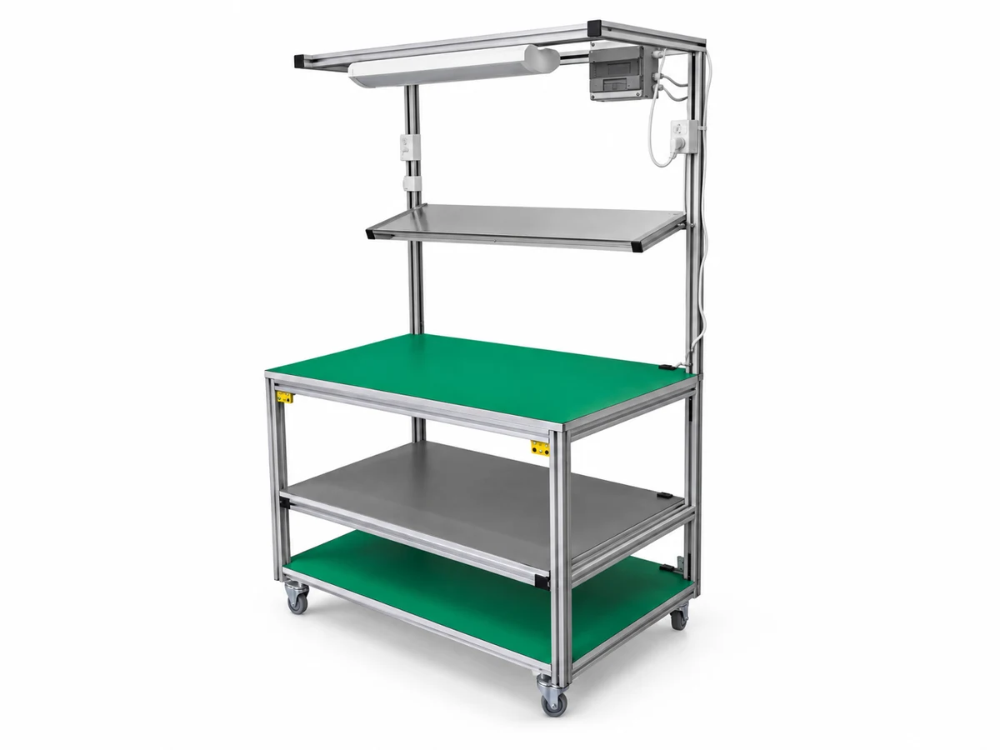

The contents
Which parts, containers and quantities need to be stored?

Storage & transport / 08
Tiered cart with an integrated task light for work at the point of use.
Discuss this configurationDimensions, materials and final specifications are agreed for your application.
Back to Storage & transportApplication planning
Which parts, containers and quantities need to be stored?
How will the trolley or storage system travel through the floor?
What loading, access and retention requirements apply?
Bring the details that matterContainer dimensions, expected loads, and the route between work areas.
Start your project briefIn the same family
Let’s make it work